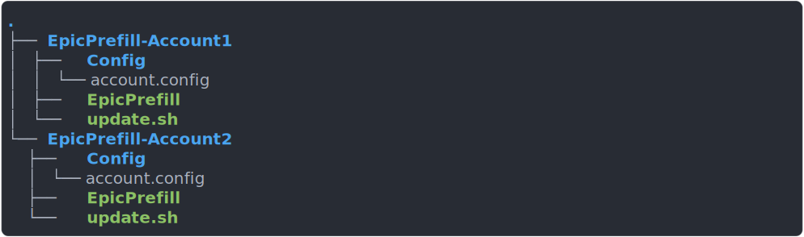

English
English
 Ελληνικά
Ελληνικά
Frequently Asked Questions¶
Can I run EpicPrefill on the Lancache server?¶
You certainly can! All you need to do is install EpicPrefill onto the server, and run it as you regularly would!
If everything works as expected, you should see a message saying it found the server at 127.0.0.1
Running from a Docker container on the Lancache server is also supported! You should instead see a message saying the server was found at 172.17.0.1
Running on the Lancache server itself can give you some advantages over running EpicPrefill on a client machine, primarily the speed at which you can prefill apps.
Since there is no network transfer happening, the prefill should only be limited by disk I/O and CPU throughput.
For example, using a SK hynix Gold P31 2TB NVME and running prefill --force on previously cached game yields the following performance:
Can EpicPrefill be run on a schedule?¶
Yes it can! Scheduled jobs can be easily setup on Linux using systemd services, and can be flexibly configured to run on any schedule that you desire.
See Configuring a Nightly Job for a guide on how to get setup with a schedule.
Can I fill my cache using previously installed Epic games?¶
Unfortunately it is not possible to fill a Lancache using games that have been installed with Epic. The installed games are in a different format than what Lancache caches, as they are decrypted and unzipped from the raw request. The decryption/unzip process is not reversible. Thus, the only way to get games properly cached is to redownload them using either EpicPrefill or Epic
Where does EpicPrefill store downloads?¶
EpicPrefill actually doesn't save anything at all! It will simply download data from the Lancache as quickly as it can, without saving the data to disk. The Lancache instance will be what is writing game downloads to disk as something is being downloaded through it, whether by using Epic or EpicPrefill.
How do I pause my running downloads?¶
You can pause your downloads at any time by simply pressing CTRL + C, which will immediately terminate the application. This won't hurt anything at all, and EpicPrefill will pickup where it left off during the next prefill run.
Is it possible to prefill apps I don't own?¶
While it would certainly be helpful (and cheaper!) to prefill apps that you don't own, it is unfortunately not possible. In order to download from the Epic network, Epic requires you to authenticate with your username and password. Epic keeps track of which apps you own, which is how EpicPrefill displays the list of available apps in select-apps. When EpicPrefill attempts to download any app (owned or unowned) the Epic network will validate that you do indeed own that app. If you do not own it, then the Epic network will simply refuse to let you download it.
How can I limit download speeds?¶
You may want to limit the download speed of EpicPrefill to prevent it from potentially saturating your entire connection, causing other devices to suffer from massive latency and poor speeds. This issue is known as bufferbloat, and more detailed information on the issue can be found here: What is bufferbloat?
EpicPrefill does not currently contain any functionality to limit its own download speed, and due to the way that downloads are implemented will likely never be able to throttle its own download speed. Additionally, even if EpicPrefill was able to throttle itself, the same issue would persist with downloads through Epic.
One method to limit bandwidth would be to configure Quality of Service (QOS) on your router, limiting bandwidth to the Lancache server, or by prioritizing other network traffic. A general overview of QOS can be found here : Beginners guide to QOS
For more brand specific guides (non-exhaustive), see :
My logs have weird characters that make it hard to read. Is there any way to remove them?¶
Depending on the terminal that you are using, and what colors your system supports, you may see output similar to the following:
[6:20:46 PM] Starting [38;5;80mFortnite[0m
[6:20:46 PM] Downloading [38;5;170m42.91 GiB[0m
One of the reasons you may be seeing this is that your terminal is misreporting what capabilities it supports, thus receiving output that it can't handle. To remove these characters from the log, simply use the flag --no-ansi which will remove all unsupported characters from the application's output.
Can I use more than one Epic account at the same time?¶
Unfortunately EpicPrefill doesn't directly support multiple accounts as it was written to be a single user application. Fortunately there is however a fairly simple workaround. EpicPrefill is designed as a "self-contained" application, meaning that it keeps all of its configuration inside of the folder where it is installed.
In order to use two (or more) accounts at the same time, you should create a separate instance of EpicPrefill for each account. Suppose that you have two accounts that you would like to use, when correctly setup the folder structure should look similar to this:

After the multiple instances have been created, they can both be used as usual by logging in and running the prefill.